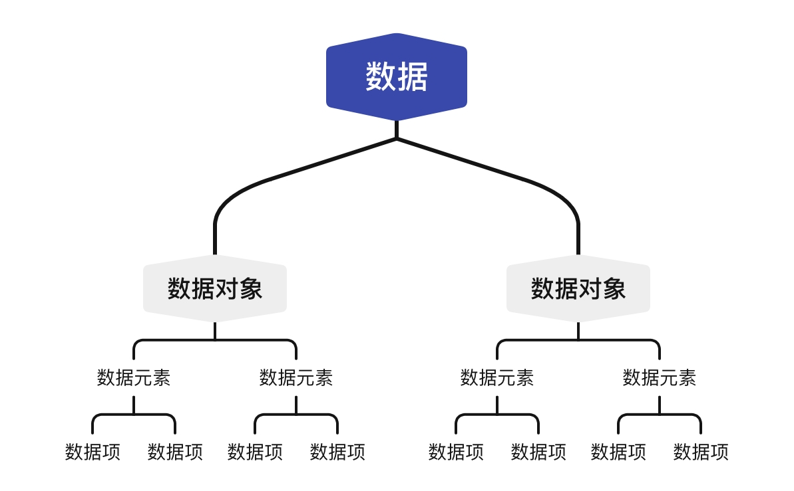

数据结构与算法的入门概念
本文索引
Preface:
本篇所有代码均由 C++ 实现
- 参考文献：
- 大话数据结构（程杰）
- 数据结构考研指导（王道论坛）
数据结构
基本概念
数据：描述客观事物的符号，计算机的可操作对象，是一个整体的概念。
数据元素：组成数据的基本单位，如数组的一项。
数据对象：相同性质的数据元素的集合，是数据的子集合。
数据项：数据不可分割的最小单位。
数据结构（data structure）：相互之间存在一种或多种特定关系的数据元素的集合。
四者关系可以如此表示：

逻辑结构：数据元素之间的相互关系
集合结构
数据元素除了同属一个集合外没有其他关系。
线性结构
数据元素是一对一关系，除第一个元素外均有唯一前驱，除最后一个元素外均有唯一后继。
树形结构
数据元素是一对多关系，有唯一的前驱和多个后继。
图装结构
数据元素是多对多关系。
数据运算
数据的查找、插入和删除等操作。
数据的物理结构
数据的存储结构影响着数据运算的效率和可行性。
此部分知识在操作系统_文件管理章节有详细说明。
顺序存储：数据元素存放在连续的存储单元中。
非顺序存储：链式存储、索引存储、散列存储。
抽象数据类型
抽象数据类型（abstract data type, ADT）是数学的抽象、对实现原理的抽象，即使用者只关心数据对象和相关的操作 “是什么”，而不关心 “如何实现”。
如 C语言中的结构体（struct）、C++/Java/Python 中的类（class）等。
换言之，对于一门计算机语言来说，只要不是基本数据类型，即为抽象数据类型。
拓展：同样采取抽象思想的还有应用程序接口（application programming interface, API）。
算法
算法（algorithm）是处理问题的方法、步骤，不仅涉及计算机科学，在计算机中是由程序实现，如函数、方法、类或是整个程序框架。
算法的特性：有穷性、可行性、确定性。
算法设计的要求：正确性、可读性、健壮性、时间效率高和存储量低。
算法效率的度量
算法的时间复杂度
算法的时间复杂度即事先预估算法的时间开销与问题规模 n 的关系。
1 | void func(int n) { |
上述程序的时间复杂度为 T(n) = 3n+3.
大O表示法
上限表示法，即算法在最坏的情况下的时间复杂度。
\[ T(n)=O(f(n)) \Leftrightarrow \lim_{n \to \infty} \frac{T(n)}{f(n)}=c(c\text{为常数}). \]
故上述算法的时间复杂度为 T(n) = O(n).
常见算法的时间复杂度（从小到达排列）:
\[ O(1)<O(log_2n)<O(n)<O(n^2)<O(n^3)<O(2^n)<O(n!)<O(n^n). \]
算法的时间复杂度相加，只保留最高阶的项。
\[ T(n)=T_1(n)+T_2(n)=O(f(n))+O(g(n))=O(max(f(n),g(n))) \]
算法的空间复杂度
程序的指令和数据存储在内存中，算法的空间复杂度即为程序占内存的大小与问题规模 n 的关系。
1 | void func(int n) { |
以上代码的空间复杂度为 S(n) = n+1，同样使用大O表示法，则 S(n) = O(n).
递归函数调用的内存开销：
1 | void func(int n) { |
该函数递归调用 n 次，每次在内存中增加两个 int 型变量，故 S(n) = O(n).
若将程序改为：
1 | void func(int n) { |
则函数每次调用需在内存中增加一个 int 型数组，从 n 到 1 数组的长度分别为 n, n-1, … , 1，则总的长度为 \(\frac{1}{2}(n^2+n)\)，故 S(n) = O(n2).